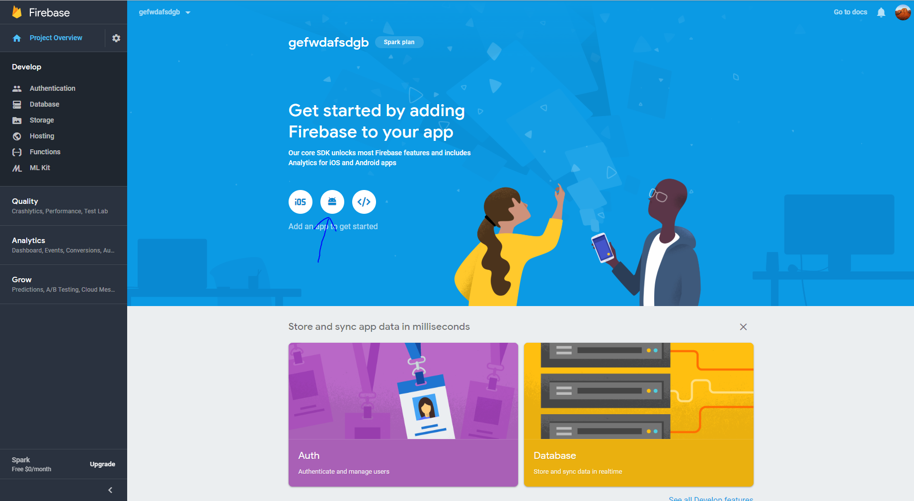

This application leverages many different Android and Google libraries however the main focus of this tutorial will be on Firebase, specifically Firebase Real-time Database, Firebase Storage, and Firebase UI. More information about the Firebase can be found here, while more information on Google ML can be found here
Our backend will not be too complex since much of the Database and ML work is going to be handled by the high level APIs provided to us by Google for Firebase.
First we will need to create an new Android project. Once we have created the Android project, we will want to navigate to the Firebase Console which can be found here. Once at the console, we will need to create a new Firebase project. After creating the project you will be redirected to your project's specific console where you can add Firebase to your Android project (below is a screenshot the landing page as of writing...the arrow indiates the button you need to click to stat adding Firebase to your project).

This will direct you to a step-by-step process for adding Firebase to your project. Since we are using OAuth2 for authentication, you will need to include the SHA-1 parameter that is marked as optional in the provided tutorial. Steps for getting the SHA-1 code are included in the provided tutorial.
From here on in, we will be assuming you have successfully completed the provided tutorial and have gotten Firebase added to the project.
This is what your app-level Gradle build file should look like to complete this tutorial.
apply plugin: 'com.android.application'
android {
compileSdkVersion 28
defaultConfig {
applicationId "com.aantaya.imagewars"
minSdkVersion 21
targetSdkVersion 28
versionCode 1
versionName "1.0"
testInstrumentationRunner "android.support.test.runner.AndroidJUnitRunner"
}
buildTypes {
release {
minifyEnabled false
proguardFiles getDefaultProguardFile('proguard-android.txt'), 'proguard-rules.pro'
}
}
compileOptions {
sourceCompatibility = '1.8'
targetCompatibility = '1.8'
}
}
dependencies {
implementation fileTree(dir: 'libs', include: ['*.jar'])
implementation 'com.android.support:appcompat-v7:28.0.0'
implementation 'com.android.support:design:28.0.0'
implementation 'com.android.support:cardview-v7:28.0.0'
implementation 'com.android.support.constraint:constraint-layout:1.1.3'
implementation 'com.squareup.picasso:picasso:2.5.2'
// Google
implementation 'com.google.android.gms:play-services-auth:16.0.1'
testImplementation 'junit:junit:4.12'
androidTestImplementation 'com.android.support.test:runner:1.0.2'
androidTestImplementation 'com.android.support.test.espresso:espresso-core:3.0.2'
//Firebase
implementation 'com.google.firebase:firebase-auth:16.0.5'
implementation 'com.google.firebase:firebase-storage:16.0.3'
implementation 'com.firebaseui:firebase-ui-database:4.2.1'
//FusedLocationProviderClient
implementation 'com.google.android.gms:play-services-location:16.0.0'
implementation 'com.google.firebase:firebase-database:16.0.5'
//Google Firebase ML
implementation 'com.google.firebase:firebase-ml-vision:18.0.1'
implementation 'com.google.firebase:firebase-ml-vision-image-label-model:17.0.2'
}
apply plugin: 'com.google.gms.google-services'
This is what the project-level Gradle build file should look like.
buildscript {
repositories {
google()
jcenter()
}
dependencies {
classpath 'com.android.tools.build:gradle:3.2.1'
classpath 'com.google.gms:google-services:4.1.0'
// NOTE: Do not place your application dependencies here; they belong
// in the individual module build.gradle files
}
}
allprojects {
repositories {
google()
jcenter()
}
}
task clean(type: Delete) {
delete rootProject.buildDir
}
There is nothing too special about the manifest for this project. Your manifest will look a little bit different since you will have a different package name.
<?xml version="1.0" encoding="utf-8"?>
<manifest
xmlns:android="http://schemas.android.com/apk/res/android"
xmlns:tools="http://schemas.android.com/tools"
package="com.aantaya.imagewars">
<!-- To auto-complete the email text field in the login form with the user's emails -->
<uses-permission android:name="android.permission.ACCESS_COARSE_LOCATION" />
<uses-permission android:name="android.permission.ACCESS_FINE_LOCATION" />
<uses-permission android:name="android.permission.GET_ACCOUNTS" />
<uses-permission android:name="android.permission.READ_PROFILE" />
<uses-permission android:name="android.permission.READ_CONTACTS" />
<uses-permission android:name="android.permission.INTERNET" />
<application
android:allowBackup="true"
android:icon="@mipmap/logo"
android:label="@string/app_name"
android:roundIcon="@mipmap/logo_round"
android:supportsRtl="true"
android:theme="@style/AppTheme"
tools:ignore="AllowBackup,GoogleAppIndexingWarning">
<activity
android:name=".SignInActivity"
android:label="@string/app_name">
<intent-filter>
<action android:name="android.intent.action.MAIN" />
<category android:name="android.intent.category.LAUNCHER" />
</intent-filter>
</activity>
<activity
android:name=".MainActivity"
android:label="@string/title_activity_main"
android:theme="@style/AppTheme.NoActionBar">
</activity>
<activity android:name=".AddImageActivity" />
<meta-data
android:name="com.google.firebase.ml.vision.DEPENDENCIES"
android:value="label" />
</application>
</manifest>
Now we are ready to start writing actual code. We will need to create a model to define the data structure we will be using for each of our images. Note, firebase requires that we have an empty constructor in our model class. Our model will contain metadata about our image and a URL string to download it from Firebase Storage.
Here is what our model class will look like:
@IgnoreExtraProperties
public class ImageModel {
private String uid;
private String title;
private String description;
private String imageUrl;
private String location;
private long voteCount;
private String lables;
public ImageModel (){}
public ImageModel (String mTitle, String mDescription, String mImageUrl, String mLocation, long mVoteCount, String mLables){
if(mLocation == null) mLocation = "N/A";
this.title = mTitle;
this.description = mDescription;
this.imageUrl = mImageUrl;
this.location = mLocation;
this.voteCount = mVoteCount;
this.lables = mLables;
}
//This constructor is only used for updating the votes in Firebase
public ImageModel (ImageModel m, long mVoteCount){
if(m.getLocation() == null) m.setLocation("N/A");
this.title = m.getTitle();
this.description = m.getDescription();
this.imageUrl = m.getImageUrl();
this.location = m.getLocation();
this.lables = m.getLables();
this.voteCount = mVoteCount;
}
//Note: Firebase requires setters and getters for each attribute
// However we will not be including them in the tutorial. These must be
// included in your class. It is also good practice to generate the
// toString(), hashCode(), and equals() methods.
This will be the first activity that a user is presented when they open our application. It will require the user to login using Google. We are using the OAuth 2.0 protocol. OAuth 2.0 is the industry-standard protocol for authorization. OAuth 2.0 focuses on client developer simplicity while providing specific authorization flows for web applications, desktop applications, and mobile phones.
Specifically, we will be using the GoogleSignInApi.
Create this class:
public class SignInActivity extends AppCompatActivity implements
GoogleApiClient.OnConnectionFailedListener, View.OnClickListener {
private static final String TAG = "SignInActivity";
private static final int RC_SIGN_IN = 9001;
private SignInButton mSignInButton;
private ProgressBar mProgressbar;
private GoogleApiClient mGoogleApiClient;
// Firebase instance variables
private FirebaseAuth mFirebaseAuth;
// Firebase instance variables
@Override
protected void onCreate(Bundle savedInstanceState) {
super.onCreate(savedInstanceState);
setContentView(R.layout.activity_login);
// Assign fields
mSignInButton = (SignInButton) findViewById(R.id.sign_in_button);
mProgressbar = findViewById(R.id.sign_in_loading);
// Set click listeners
mSignInButton.setOnClickListener(this);
// Configure Google Sign In
GoogleSignInOptions gso = new GoogleSignInOptions.Builder(GoogleSignInOptions.DEFAULT_SIGN_IN)
.requestIdToken(getString(R.string.default_web_client_id))
.requestEmail()
.build();
mGoogleApiClient = new GoogleApiClient.Builder(this)
.enableAutoManage(this /* FragmentActivity */, this /* OnConnectionFailedListener */)
.addApi(Auth.GOOGLE_SIGN_IN_API, gso)
.build();
// Initialize FirebaseAuth
mFirebaseAuth = FirebaseAuth.getInstance();
}
@Override
public void onClick(View v) {
switch (v.getId()) {
case R.id.sign_in_button:
mProgressbar.setVisibility(View.VISIBLE);
signIn();
break;
}
}
private void signIn() {
Intent signInIntent = Auth.GoogleSignInApi.getSignInIntent(mGoogleApiClient);
startActivityForResult(signInIntent, RC_SIGN_IN);
}
@Override
public void onActivityResult(int requestCode, int resultCode, Intent data) {
super.onActivityResult(requestCode, resultCode, data);
// Result returned from launching the Intent from GoogleSignInApi.getSignInIntent(...);
if (requestCode == RC_SIGN_IN) {
GoogleSignInResult result = Auth.GoogleSignInApi.getSignInResultFromIntent(data);
if (result.isSuccess()) {
// Google Sign-In was successful, authenticate with Firebase
GoogleSignInAccount account = result.getSignInAccount();
firebaseAuthWithGoogle(account);
} else {
// Google Sign-In failed
Log.e(TAG, "Google Sign-In failed.");
}
}
}
private void firebaseAuthWithGoogle(GoogleSignInAccount acct) {
Log.d(TAG, "firebaseAuthWithGooogle:" + acct.getId());
AuthCredential credential = GoogleAuthProvider.getCredential(acct.getIdToken(), null);
mFirebaseAuth.signInWithCredential(credential)
.addOnCompleteListener(this, new OnCompleteListener<AuthResult>() {
@Override
public void onComplete(@NonNull Task<AuthResult> task) {
Log.d(TAG, "signInWithCredential:onComplete:" + task.isSuccessful());
// If sign in fails, display a message to the user. If sign in succeeds
// the auth state listener will be notified and logic to handle the
// signed in user can be handled in the listener.
if (!task.isSuccessful()) {
Log.w(TAG, "signInWithCredential", task.getException());
Toast.makeText(SignInActivity.this, "Authentication failed.",
Toast.LENGTH_SHORT).show();
} else {
startActivity(new Intent(SignInActivity.this, MainActivity.class));
finish();
}
}
});
}
@Override
public void onConnectionFailed(@NonNull ConnectionResult connectionResult) {
// An unresolvable error has occurred and Google APIs (including Sign-In) will not
// be available.
Log.d(TAG, "onConnectionFailed:" + connectionResult);
Toast.makeText(this, "Google Play Services error.", Toast.LENGTH_SHORT).show();
}
}
Once the user logs into our application, they will land on the MainActivity. The main activity this case is quite simple. We are using Fragments inside of a tabbed PageViewer so the MainActivity is basically a container for our fragments, which is where the bulk of the logic will go. Aside from that, the other things we are doing here are defining the floating action button which will be used to add images to the database, we will also request permissions if we don't already have them, and we will also instantiate the adapter we will be using for the PageViewer.
Create this class:
public class MainActivity extends AppCompatActivity implements GoogleApiClient.OnConnectionFailedListener{
public static final int NEW_CAT_ACTIVITY_REQUEST_CODE = 1;
public static final int STORAGE_PERMISSION = 2;
public static final int LOCATION_PERMISSION = 1;
public static final String ANONYMOUS = "anonymous";
public final String TAG = "MAIN_ACTIVITY";
// Firebase instance variables
private FirebaseAuth mFirebaseAuth;
private FirebaseUser mFirebaseUser;
private SharedPreferences mSharedPreferences;
private GoogleApiClient mGoogleApiClient;
private String mUsername;
private String mPhotoUrl;
/**
* The {@link android.support.v4.view.PagerAdapter} that will provide
* fragments for each of the sections. We use a
* {@link FragmentPagerAdapter} derivative, which will keep every
* loaded fragment in memory. If this becomes too memory intensive, it
* may be best to switch to a
* {@link android.support.v4.app.FragmentStatePagerAdapter}.
*/
private SectionsPagerAdapter mSectionsPagerAdapter;
/**
* The {@link ViewPager} that will host the section contents.
*/
private ViewPager mViewPager;
@Override
protected void onCreate(Bundle savedInstanceState) {
super.onCreate(savedInstanceState);
setContentView(R.layout.activity_main);
getPermission();
Toolbar toolbar = (Toolbar) findViewById(R.id.toolbar);
setSupportActionBar(toolbar);
// Create the adapter that will return a fragment for each of the three
// primary sections of the activity.
mSectionsPagerAdapter = new SectionsPagerAdapter(getSupportFragmentManager());
// Set up the ViewPager with the sections adapter.
mViewPager = (ViewPager) findViewById(R.id.container);
mViewPager.setAdapter(mSectionsPagerAdapter);
//Set page limit to 1 so when we are scrolling through tabs, we don't destroy
// a page (Fragment) and need to make an expensive network call to get db contents every time
mViewPager.setOffscreenPageLimit(1);
FloatingActionButton fab = (FloatingActionButton) findViewById(R.id.fab);
fab.setOnClickListener(view -> {
Intent intent = new Intent(MainActivity.this, AddImageActivity.class);
startActivityForResult(intent, NEW_CAT_ACTIVITY_REQUEST_CODE);
});
mSharedPreferences = PreferenceManager.getDefaultSharedPreferences(this);
// Set default username is anonymous.
mUsername = ANONYMOUS;
mGoogleApiClient = new GoogleApiClient.Builder(this)
.enableAutoManage(this /* FragmentActivity */, this /* OnConnectionFailedListener */)
.addApi(Auth.GOOGLE_SIGN_IN_API)
.build();
// Initialize Firebase Auth
mFirebaseAuth = FirebaseAuth.getInstance();
mFirebaseUser = mFirebaseAuth.getCurrentUser();
if (mFirebaseUser == null) {
// Not signed in, launch the Sign In activity
startActivity(new Intent(this, SignInActivity.class));
finish();
} else {
mUsername = mFirebaseUser.getDisplayName();
if (mFirebaseUser.getPhotoUrl() != null) {
mPhotoUrl = mFirebaseUser.getPhotoUrl().toString();
}
}
}
public void onActivityResult(int requestCode, int resultCode, Intent data) {
super.onActivityResult(requestCode, resultCode, data);
if (requestCode == NEW_CAT_ACTIVITY_REQUEST_CODE && resultCode == RESULT_OK) {
//On return of add image activity
}
}
@Override
public boolean onCreateOptionsMenu(Menu menu) {
// Inflate the menu; this adds items to the action bar if it is present.
getMenuInflater().inflate(R.menu.menu_main, menu);
return true;
}
@Override
public boolean onOptionsItemSelected(MenuItem item) {
// Handle action bar item clicks here. The action bar will
// automatically handle clicks on the Home/Up button, so long
// as you specify a parent activity in AndroidManifest.xml.
switch (item.getItemId()) {
case R.id.action_logout:
mFirebaseAuth.signOut();
Auth.GoogleSignInApi.signOut(mGoogleApiClient);
mUsername = ANONYMOUS;
startActivity(new Intent(this, SignInActivity.class));
finish();
return true;
case R.id.action_settings:
//TODO: Maybe make a settings page
return true;
default:
return super.onOptionsItemSelected(item);
}
}
@Override
public void onConnectionFailed(@NonNull ConnectionResult connectionResult) {
// An unresolvable error has occurred and Google APIs (including Sign-In) will not
// be available.
Log.d(TAG, "onConnectionFailed:" + connectionResult);
Toast.makeText(this, "Google Play Services error.", Toast.LENGTH_SHORT).show();
}
public void getPermission(){
if (ActivityCompat.checkSelfPermission(this, Manifest.permission.ACCESS_FINE_LOCATION) != PackageManager.PERMISSION_GRANTED
&& ActivityCompat.checkSelfPermission(this, Manifest.permission.ACCESS_COARSE_LOCATION) != PackageManager.PERMISSION_GRANTED) {
ActivityCompat.requestPermissions(this, new String[]{Manifest.permission.ACCESS_FINE_LOCATION, Manifest.permission.ACCESS_COARSE_LOCATION},
MainActivity.LOCATION_PERMISSION);
Log.v(TAG, "*****Needed to ask permission*****");
}
}
}
This class is needed to define which fragments will be created and displayed when the user is swiping in a certain direction. In our case, this is quite simple since we only have two fragments to display.
public class SectionsPagerAdapter extends FragmentPagerAdapter {
public SectionsPagerAdapter(FragmentManager fm) {
super(fm);
}
@Override
public Fragment getItem(int position) {
// getItem is called to instantiate the fragment for the given page.
// Return a PlaceholderFragment (defined as a static inner class below).
if (position == 0)
return VoteFragment.newInstance();
else
return UsersImagesFragment.newInstance();
}
@Override
public int getCount() {
// Show 2 total pages.
return 2;
}
}
The first fragment we will be creating is the voting fragment. This fragment will allow the user vote on whether or not they like or dislike a certain picture in our database. We will need to read from our database using the class "DatabaseReference". Once we successfully read the contents from the database, we will load them into an ArrayList. This will allow us to index through them as teh user votes on images. We are also storing each images UUID, so that when a user votes on an image, we know exactly which one they chose. Once the user votes on an image, we will update the model we have stored in the ArrayList with it's new VoteCount, then update the record we have in Firebase (Asynchronously), and then we will index the next image. Note, we are loading in each image using Picasso. Picasso is an easy to use library for downloading images from URLs and displaying them in an ImageView.
public class VoteFragment extends Fragment {
//Constants
private static final String TAG = "VOTE_FRAGMENT";
private static final String DATABASE_NAME = "uploads";
//UI
private View rootView;
private Button upVoteButton;
private Button downVoteButton;
private ImageView image;
private TextView titleText;
private TextView descriptionText;
//Firebase
private static DatabaseReference mDb;
private FirebaseAuth mAuth;
private String userId;
//Random Variables
private List<ImageModel> mImageModels;
private int currImage;
public VoteFragment() {
}
/**
* Returns a new instance of this fragment for the given section
* number.
*/
public static VoteFragment newInstance() {
VoteFragment fragment = new VoteFragment();
return fragment;
}
@Override
public void onCreate(Bundle savedInstanceState){
super.onCreate(savedInstanceState);
}
@Override
public View onCreateView(LayoutInflater inflater, ViewGroup container,
Bundle savedInstanceState) {
rootView = inflater.inflate(R.layout.fragment_vote, container, false);
mAuth = FirebaseAuth.getInstance();
userId = mAuth.getCurrentUser().getUid();
mDb = FirebaseDatabase.getInstance().getReference();
upVoteButton = rootView.findViewById(R.id.vote_positive_button);
downVoteButton = rootView.findViewById(R.id.vote_negative_button);
image = rootView.findViewById(R.id.vote_image);
titleText = rootView.findViewById(R.id.vote_image_title);
descriptionText = rootView.findViewById(R.id.vote_image_description);
mImageModels = new ArrayList<>();
currImage = 0;
return rootView;
}
@Override
public void onStart(){
super.onStart();
ValueEventListener mValueEventListener = new ValueEventListener() {
@Override
public void onDataChange(@NonNull DataSnapshot dataSnapshot) {
if(dataSnapshot.exists()){
Log.v(TAG, "DataSnapshot: " + dataSnapshot.toString());
for (DataSnapshot postSnapshot : dataSnapshot.child("uploads").getChildren()) {
ImageModel upload = postSnapshot.getValue(ImageModel.class);
upload.setUid(postSnapshot.getKey());
Log.v(TAG, "Image UUID: " + postSnapshot.getKey());
mImageModels.add(upload);
}
if(mImageModels.size() >= 1){
titleText.setText(mImageModels.get(currImage).getTitle());
descriptionText.setText(mImageModels.get(currImage).getDescription());
Picasso.with(getContext()).load(mImageModels.get(currImage).getImageUrl()).fit().centerCrop().into(image);
}
}else {
//TODO: Display text saying there are no images to find
}
}
@Override
public void onCancelled(@NonNull DatabaseError databaseError) {
Toast.makeText(getActivity(), databaseError.getMessage(), Toast.LENGTH_SHORT).show();
}
};
mDb.addListenerForSingleValueEvent(mValueEventListener);
upVoteButton.setOnClickListener(view -> {
String id = mImageModels.get(currImage).getUid();
long numVotes = mImageModels.get(currImage).getVoteCount() + 1;
ImageModel model = new ImageModel(mImageModels.get(currImage), numVotes);
mImageModels.get(currImage).setVoteCount(numVotes);
mDb.child(DATABASE_NAME).child(id).setValue(model);
nextImage();
});
downVoteButton.setOnClickListener(view -> {
String id = mImageModels.get(currImage).getUid();
long numVotes = mImageModels.get(currImage).getVoteCount() - 1;
ImageModel model = new ImageModel(mImageModels.get(currImage), numVotes);
mImageModels.get(currImage).setVoteCount(numVotes);
mDb.child(DATABASE_NAME).child(id).setValue(model);
nextImage();
});
}
public void nextImage(){
currImage++;
if (currImage >= mImageModels.size()) currImage = 0;
titleText.setText(mImageModels.get(currImage).getTitle());
descriptionText.setText(mImageModels.get(currImage).getDescription());
Picasso.with(getContext()).load(mImageModels.get(currImage).getImageUrl()).fit().centerCrop().into(image);
}
}
This next fragment will display all of the users' submitted images, along with metadata about each one, finally, these images will be displayed in descending order by votes. The ImageModels are displayed in CardViews, inside of a RecyclerView.The Recyc;erView is created using a special Firebase UI component called "FirebaseRecyclerAdapter" which will make it easy to sync our RecyclerView with the most up-to-date version of the Firebase database. With this implementation we are attaching to it a "ValueEventListener" which will be triggered each time the Firebase database is changed so we can update our UI accordingly (and possibly rearrange the order of the list). Firebase only allows us to sort in ascending order, and so to get around this, we will modifying our LinearLayoutManager with "setReverseLayout(true)" and "setStackFromEnd(true)" this way the items are in descending order.
public class UsersImagesFragment extends Fragment {
//Constants
private static final String TAG = "USER_IMAGES_FRAGMENT";
private static final String DATABASE_NAME = "uploads";
//UI
private View rootView;
private RecyclerView recyclerView;
private ProgressBar progressBar;
//Firebase
private static DatabaseReference mDb;
private FirebaseRecyclerAdapter<ImageModel, MImageHolder> adapter;
private FirebaseAuth mAuth;
private String userId;
private List<ImageModel> mImageModels;
public UsersImagesFragment() {
}
/**
* Returns a new instance of this fragment for the given section
* number.
*/
public static UsersImagesFragment newInstance() {
return new UsersImagesFragment();
}
@Override
public View onCreateView(@NonNull LayoutInflater inflater, ViewGroup container,
Bundle savedInstanceState) {
rootView = inflater.inflate(R.layout.fragment_main, container, false);
recyclerView = rootView.findViewById(R.id.mRecyclerView);
progressBar = rootView.findViewById(R.id.main_progress_bar);
mAuth = FirebaseAuth.getInstance();
userId = mAuth.getCurrentUser().getUid();
mDb = FirebaseDatabase.getInstance().getReference();
mImageModels = new ArrayList<>();
return rootView;
}
@Override
public void onStart() {
super.onStart();
Query q = mDb.child(DATABASE_NAME).orderByChild("voteCount");
FirebaseRecyclerOptions<ImageModel> options =
new FirebaseRecyclerOptions.Builder<ImageModel>()
.setQuery(q, ImageModel.class)
.build();
adapter = new FirebaseRecyclerAdapter <ImageModel, MImageHolder>(options) {
@Override
protected void onBindViewHolder(@NonNull MImageHolder holder, int position, @NonNull ImageModel model) {
holder.title.setText(model.getTitle());
holder.description.setText(model.getDescription());
holder.location.setText(model.getLocation());
holder.voteCount.setText("Number of Votes: " + String.valueOf(model.getVoteCount()));
holder.lables.setText("Lables: " + model.getLables());
Picasso.with(getContext()).load(model.getImageUrl()).into(holder.image);
}
@NonNull
@Override
public MImageHolder onCreateViewHolder(@NonNull ViewGroup viewGroup, int i) {
View v = LayoutInflater.from(viewGroup.getContext()).inflate(R.layout.recycler_view_item,
viewGroup, false);
progressBar.setVisibility(View.INVISIBLE);
return new MImageHolder(v);
}
};
adapter.registerAdapterDataObserver(new RecyclerView.AdapterDataObserver() {
@Override
public void onChanged() {
super.onChanged();
}
});
recyclerView.setHasFixedSize(true);
LinearLayoutManager manager = new LinearLayoutManager(getActivity());
manager.setReverseLayout(true);
manager.setStackFromEnd(true);
recyclerView.setLayoutManager(manager);
recyclerView.setAdapter(adapter);
adapter.startListening();
}
@Override
public void onStop() {
super.onStop();
adapter.stopListening();
}
public static class MImageHolder extends RecyclerView.ViewHolder{
ImageView image;
TextView title;
TextView description;
TextView location;
TextView voteCount;
TextView lables;
MImageHolder(@NonNull View itemView) {
super(itemView);
image = itemView.findViewById(R.id.recyclerview_image);
title = itemView.findViewById(R.id.recyclerview_title);
description = itemView.findViewById(R.id.recyclerview_desc);
location = itemView.findViewById(R.id.recyclerview_location);
voteCount = itemView.findViewById(R.id.recyclerview_votes);
lables = itemView.findViewById(R.id.recyclerview_lables);
}
}
}
This activity will be where we add an image to the firebase database. This is also where we will be using Google ML to label our images before they are sent to the database. We will be using the class "StorageReference" in order to store our images directly into a file system, then we will be suing "Databasereference" in order to store the data about our images (including a URL our image so we can download it later), finally we will be converting our image to a bitmap and running it through Googles Image Label API with the classes "FirebaseVisionImage" and "FirebaseVisionLabelDetector".
public class AddImageActivity extends AppCompatActivity {
public static final String TAG = "ADD_CAT_ACTIVITY";
private static final int CAMERA_REQUEST = 1888;
private static final int GALLERY_REQUEST = 1789;
public static final int PICK_IMAGE = 1;
public static final int TAKE_IMAGE = 2;
private EditText myEditNameView;
private EditText myEditDescView;
private ImageView myImageCatView;
private ProgressBar myProgressBar;
private Button upload;
private Button takePicture;
private Button saveButton;
private String imagePath;
private StorageReference mStorageRef;
private DatabaseReference mDatabaseRef;
private Uri mUri;
private FirebaseVisionLabelDetector detector;
private FirebaseVisionImage firebaseVisionImage;
//Location will be stored as a lat & long separated by a comma
private String mLocation;
private FusedLocationProviderClient fusedLocation;
@Override
public void onCreate(Bundle savedInstanceState) {
super.onCreate(savedInstanceState);
setContentView(R.layout.activity_add_image);
fusedLocation = LocationServices.getFusedLocationProviderClient(this);
mStorageRef = FirebaseStorage.getInstance().getReference("uploads");
mDatabaseRef = FirebaseDatabase.getInstance().getReference("uploads");
detector = FirebaseVision.getInstance().getVisionLabelDetector();
getLocation();
myEditNameView = findViewById(R.id.edit_image_name);
myEditDescView = findViewById(R.id.edit_image_desc);
myImageCatView = findViewById(R.id.add_image);
//TODO: Add progress bar to layout and then bind view here
//myProgressBar = findViewById(R.id.upload_progress_bar);
takePicture = findViewById(R.id.capture_image);
takePicture.setOnClickListener(view -> {
Intent intent = new Intent(MediaStore.ACTION_IMAGE_CAPTURE);
List<ResolveInfo> activities = getPackageManager().queryIntentActivities(intent, 0);
if (!activities.isEmpty()) {
Intent cameraIntent = new Intent(android.provider.MediaStore.ACTION_IMAGE_CAPTURE);
startActivityForResult(cameraIntent, CAMERA_REQUEST);
}
});
upload = findViewById(R.id.upload_image);
upload.setOnClickListener(view -> {
Intent intent = new Intent();
intent.setType("image/*");
intent.setAction(Intent.ACTION_GET_CONTENT);
startActivityForResult(Intent.createChooser(intent, "Select Picture"), GALLERY_REQUEST);
});
saveButton = findViewById(R.id.button_save);
saveButton.setOnClickListener(view -> {
Intent replyIntent = new Intent();
if (TextUtils.isEmpty(myEditNameView.getText()) || TextUtils.isEmpty(myEditDescView.getText())) {
setResult(RESULT_CANCELED, replyIntent);
} else {
uploadFile();
}
finish();
});
}
@Override
public void onActivityResult(int requestCode, int resultCode, Intent data) {
super.onActivityResult(requestCode, resultCode, data);
if (requestCode == GALLERY_REQUEST && resultCode == Activity.RESULT_OK) {
mUri = data.getData();
Picasso.with(this).load(mUri).into(myImageCatView);
}
if (requestCode == CAMERA_REQUEST && resultCode == Activity.RESULT_OK) {
mUri = data.getData();
Picasso.with(this).load(mUri).into(myImageCatView);
}
}
public void getLocation() {
if (ActivityCompat.checkSelfPermission(this, Manifest.permission.ACCESS_FINE_LOCATION) != PackageManager.PERMISSION_GRANTED
&& ActivityCompat.checkSelfPermission(this, Manifest.permission.ACCESS_COARSE_LOCATION) != PackageManager.PERMISSION_GRANTED) {
ActivityCompat.requestPermissions(this, new String[]{Manifest.permission.ACCESS_FINE_LOCATION, Manifest.permission.ACCESS_COARSE_LOCATION},
MainActivity.LOCATION_PERMISSION);
Log.v(TAG, "*****Needed to ask permission again*****");
} else {
fusedLocation.getLastLocation().addOnSuccessListener(this, location -> {
if (location != null) {
mLocation = String.format(Locale.US, "%s, %s",
location.getLatitude(), location.getLongitude());
Log.v(TAG, "Found a location: " + mLocation);
}
});
}
}
public String getFileExtention(Uri mUri){
ContentResolver mContent = getContentResolver();
MimeTypeMap mMime = MimeTypeMap.getSingleton();
return mMime.getExtensionFromMimeType(mContent.getType(mUri));
}
public void uploadFile(){
if(mUri != null){
StorageReference fileReference = mStorageRef.child(System.currentTimeMillis() + "." + getFileExtention(mUri));
try {
Bitmap bitmap = MediaStore.Images.Media.getBitmap(this.getContentResolver(), mUri);
firebaseVisionImage = FirebaseVisionImage.fromBitmap(bitmap);
} catch (IOException e) {
e.printStackTrace();
}
fileReference.putFile(mUri).continueWithTask(task -> {
if(!task.isSuccessful()) throw task.getException();
return fileReference.getDownloadUrl();
}).addOnCompleteListener(taskA -> {
if (taskA.isSuccessful()){
Task<List<FirebaseVisionLabel>> result =
detector.detectInImage(firebaseVisionImage)
.addOnSuccessListener( labels -> {
StringBuilder mLables = new StringBuilder();
for (FirebaseVisionLabel l : labels) mLables.append(l.getLabel()).append(", ");
String title = myEditNameView.getText().toString().trim();
String desc = myEditDescView.getText().toString().trim();
String location = mLocation;
String imageUrl = taskA.getResult().toString();
Log.d(TAG, "Successful Upload URI: " + imageUrl);
ImageModel mImageModel = new ImageModel(title, desc, imageUrl, location, 0, mLables.toString());
String id = mDatabaseRef.push().getKey();
mDatabaseRef.child(id).setValue(mImageModel);
Toast.makeText(AddImageActivity.this, "Upload Successful w/ ML", Toast.LENGTH_SHORT).show();
})
.addOnFailureListener( e -> {
String mLables = "N/A";
String title = myEditNameView.getText().toString().trim();
String desc = myEditDescView.getText().toString().trim();
String location = mLocation;
String imageUrl = taskA.getResult().toString();
Log.d(TAG, "Successful Upload URI: " + imageUrl);
ImageModel mImageModel = new ImageModel(title, desc, imageUrl, location, 0, mLables);
String id = mDatabaseRef.push().getKey();
mDatabaseRef.child(id).setValue(mImageModel);
Toast.makeText(AddImageActivity.this, "Upload Successful w/o ML", Toast.LENGTH_SHORT).show();
});
}else {
Toast.makeText(this, "Upload failed: " + taskA.getException() ,
Toast.LENGTH_LONG).show();
}
});
}
}
}
Our front end will also be very simple. Basically we will have three layouts, one for voting on images, one for viewing the images in the RecyclerView, and one for adding an image to the database. Since the layouts are not the core component of this tutorial, I will just provide the XML for each layout.
<?xml version="1.0" encoding="utf-8"?>
<FrameLayout
xmlns:android="http://schemas.android.com/apk/res/android"
android:id="@+id/sign_in_layout"
android:layout_width="match_parent"
android:layout_height="match_parent"
android:gravity="center"
android:orientation="vertical">
<TextView
android:layout_width="wrap_content"
android:layout_height="wrap_content"
android:textSize="30sp"
android:textStyle="bold"
android:layout_gravity="center_horizontal"
android:layout_marginTop="40dp"
android:text="@string/sign_in"/>
<ImageView
android:layout_width="wrap_content"
android:layout_height="wrap_content"
android:src="@mipmap/logo_round"
android:layout_gravity="center_horizontal"
android:layout_marginTop="115dp"/>
<com.google.android.gms.common.SignInButton
android:id="@+id/sign_in_button"
android:layout_width="wrap_content"
android:layout_height="wrap_content"
android:layout_centerInParent="true"
android:visibility="visible"
android:layout_gravity="center"/>
<ProgressBar
android:id="@+id/sign_in_loading"
android:layout_width="wrap_content"
android:layout_height="wrap_content"
android:layout_gravity="center|bottom"
android:layout_marginBottom="30dp"
android:visibility="invisible"
android:indeterminate="true"/>
</FrameLayout>
<?xml version="1.0" encoding="utf-8"?>
<android.support.design.widget.CoordinatorLayout
xmlns:android="http://schemas.android.com/apk/res/android"
xmlns:app="http://schemas.android.com/apk/res-auto"
xmlns:tools="http://schemas.android.com/tools"
android:id="@+id/main_content"
android:fitsSystemWindows="true"
android:layout_width="match_parent"
android:layout_height="match_parent"
tools:context=".MainActivity">
<android.support.design.widget.AppBarLayout
android:id="@+id/appbar"
android:layout_width="match_parent"
android:layout_height="wrap_content"
android:paddingTop="@dimen/appbar_padding_top"
android:theme="@style/AppTheme.AppBarOverlay">
<android.support.v7.widget.Toolbar
android:id="@+id/toolbar"
android:layout_width="match_parent"
android:layout_height="?attr/actionBarSize"
android:layout_weight="1"
android:background="?attr/colorPrimary"
app:layout_scrollFlags="scroll|enterAlways"
app:popupTheme="@style/AppTheme.PopupOverlay"
app:title="@string/app_name" />
</android.support.design.widget.AppBarLayout>
<android.support.v4.view.ViewPager
android:id="@+id/container"
android:layout_width="match_parent"
android:layout_height="match_parent"
app:layout_behavior="@string/appbar_scrolling_view_behavior" />
<android.support.design.widget.FloatingActionButton
android:id="@+id/fab"
android:layout_width="wrap_content"
android:layout_height="match_parent"
android:layout_gravity="end|bottom"
android:layout_margin="16dp"
android:src="@drawable/ic_add_black_24dp"
app:backgroundTint="@android:color/holo_blue_bright"
app:layout_constraintBottom_toBottomOf="parent"
app:layout_constraintRight_toRightOf="parent" />
</android.support.design.widget.CoordinatorLayout>
<?xml version="1.0" encoding="utf-8"?>
<android.support.constraint.ConstraintLayout
xmlns:android="http://schemas.android.com/apk/res/android"
android:id="@+id/constraintLayout"
android:layout_width="match_parent"
android:layout_height="match_parent">
<RelativeLayout
android:layout_width="match_parent"
android:layout_height="match_parent">
<ProgressBar
android:id="@+id/main_progress_bar"
android:layout_width="wrap_content"
android:layout_height="wrap_content"
android:layout_centerInParent="true"/>
</RelativeLayout>
<LinearLayout
android:layout_width="match_parent"
android:layout_height="match_parent">
<android.support.v7.widget.RecyclerView
android:id="@+id/mRecyclerView"
android:layout_width="match_parent"
android:layout_height="match_parent"
android:scrollbars="vertical" />
</LinearLayout>
</android.support.constraint.ConstraintLayout>
<?xml version="1.0" encoding="utf-8"?>
<LinearLayout
xmlns:android="http://schemas.android.com/apk/res/android"
android:layout_width="match_parent"
android:layout_height="wrap_content"
android:orientation="vertical">
<android.support.v7.widget.CardView
android:layout_width="match_parent"
android:layout_height="wrap_content"
android:layout_marginTop="5dp"
android:layout_marginEnd="5dp"
android:layout_marginStart="5dp"
android:backgroundTint= "#F8F0FB">
<RelativeLayout
android:layout_width="match_parent"
android:layout_height="wrap_content"
android:padding="8dp">
<ImageView
android:id="@+id/recyclerview_image"
android:layout_width="120dp"
android:layout_height="90dp"
android:layout_marginStart="5dp"
android:padding="4dp"
android:src="@mipmap/ic_launcher"
android:contentDescription="@string/recycler_view_image_desc" />
<TextView
android:id="@+id/recyclerview_title"
android:layout_width="wrap_content"
android:layout_height="wrap_content"
android:layout_marginStart="5dp"
android:layout_toEndOf="@id/recyclerview_image"
android:textAppearance="@style/Base.TextAppearance.AppCompat.Medium"
android:textColor="#000000"
android:text="@string/image_title"/>
<TextView
android:id="@+id/recyclerview_location"
android:layout_width="wrap_content"
android:layout_height="wrap_content"
android:layout_below="@id/recyclerview_title"
android:layout_marginStart="5dp"
android:layout_marginTop="0dp"
android:layout_toEndOf="@id/recyclerview_image"
android:text="@string/location"
android:textAppearance="@style/Base.TextAppearance.AppCompat.Small" />
<TextView
android:id="@+id/recyclerview_desc"
android:layout_width="wrap_content"
android:layout_height="wrap_content"
android:layout_below="@id/recyclerview_location"
android:layout_marginStart="5dp"
android:layout_marginTop="5dp"
android:layout_toEndOf="@id/recyclerview_image"
android:textAppearance="@style/Base.TextAppearance.AppCompat.Body1"
android:text="@string/image_desc"/>
<TextView
android:id="@+id/recyclerview_votes"
android:layout_width="wrap_content"
android:layout_height="wrap_content"
android:layout_marginStart="5dp"
android:layout_below="@id/recyclerview_desc"
android:layout_toEndOf="@+id/recyclerview_image"
android:textAppearance="@style/Base.TextAppearance.AppCompat.Body1"
android:textColor="#000000"
android:text="@string/vote_text"/>
<TextView
android:id="@+id/recyclerview_lables"
android:layout_width="wrap_content"
android:layout_height="wrap_content"
android:layout_below="@+id/recyclerview_votes"
android:backgroundTint="#87F1FF"
android:textColor="#BD8B9C"
android:text="Lables"/>
</RelativeLayout>
</android.support.v7.widget.CardView>
</LinearLayout>
<?xml version="1.0" encoding="utf-8"?>
<android.support.constraint.ConstraintLayout
xmlns:android="http://schemas.android.com/apk/res/android"
xmlns:app="http://schemas.android.com/apk/res-auto"
xmlns:tools="http://schemas.android.com/tools"
android:layout_width="match_parent"
android:layout_height="match_parent"
android:orientation="vertical"
tools:context="com.aantaya.imagewars.MainActivity">
<Button
android:id="@+id/vote_negative_button"
android:layout_width="wrap_content"
android:layout_height="wrap_content"
android:layout_marginStart="16dp"
android:layout_marginBottom="160dp"
android:backgroundTint="#F46036"
android:textColor="#FFF"
android:text="@string/negative_button"
app:layout_constraintBottom_toBottomOf="parent"
app:layout_constraintStart_toStartOf="parent" />
<Button
android:id="@+id/vote_positive_button"
android:layout_width="wrap_content"
android:layout_height="wrap_content"
android:layout_marginEnd="16dp"
android:layout_marginBottom="160dp"
android:backgroundTint="#5B85AA"
android:textColor="#FFF"
android:text="@string/positive_button"
app:layout_constraintBottom_toBottomOf="parent"
app:layout_constraintEnd_toEndOf="parent" />
<TextView
android:id="@+id/vote_image_description"
android:layout_width="match_parent"
android:layout_height="wrap_content"
android:layout_marginStart="16dp"
android:layout_marginEnd="16dp"
android:layout_marginBottom="16dp"
android:text="@string/image_desc"
android:textAlignment="center"
app:layout_constraintBottom_toTopOf="@+id/vote_positive_button"
app:layout_constraintEnd_toEndOf="parent"
app:layout_constraintStart_toStartOf="parent" />
<TextView
android:id="@+id/vote_image_title"
android:layout_width="wrap_content"
android:layout_height="wrap_content"
android:layout_marginStart="16dp"
android:layout_marginEnd="16dp"
android:layout_marginBottom="16dp"
android:text="@string/image_title"
android:textAlignment="center"
android:textSize="24sp"
android:textStyle="bold"
app:layout_constraintBottom_toTopOf="@+id/vote_image_description"
app:layout_constraintEnd_toEndOf="parent"
app:layout_constraintStart_toStartOf="parent" />
<ImageView
android:id="@+id/vote_image"
android:layout_width="0dp"
android:layout_height="0dp"
android:layout_marginStart="16dp"
android:layout_marginTop="16dp"
android:layout_marginEnd="16dp"
android:layout_marginBottom="16dp"
android:adjustViewBounds="true"
android:contentDescription="@string/vote_image_desc"
android:cropToPadding="false"
android:scaleType="fitCenter"
app:layout_constraintBottom_toTopOf="@+id/vote_image_title"
app:layout_constraintEnd_toEndOf="parent"
app:layout_constraintStart_toStartOf="parent"
app:layout_constraintTop_toTopOf="parent"
tools:srcCompat="@tools:sample/avatars" />
</android.support.constraint.ConstraintLayout>
<?xml version="1.0" encoding="utf-8"?>
<LinearLayout xmlns:android="http://schemas.android.com/apk/res/android"
xmlns:tools="http://schemas.android.com/tools"
android:layout_width="match_parent"
android:layout_height="match_parent"
android:orientation="vertical">
<ImageView
android:id="@+id/add_image"
android:layout_width="100dp"
android:layout_height="100dp"
android:contentDescription="@string/vote_image_desc"
android:gravity="center"
android:padding="15dp"
android:scaleType="centerInside" />
<LinearLayout
android:layout_width="match_parent"
android:layout_height="wrap_content"
android:orientation="horizontal">
<Button
android:id="@+id/upload_image"
android:layout_width="match_parent"
android:layout_height="wrap_content"
android:layout_weight="0.5"
android:text="@string/get_gallery_image"
tools:ignore="ButtonStyle" />
<Button
android:id="@+id/capture_image"
android:layout_width="match_parent"
android:layout_height="wrap_content"
android:layout_weight="0.5"
android:text="@string/get_camera_image"
tools:ignore="ButtonStyle" />
</LinearLayout>
<EditText
android:id="@+id/edit_image_name"
android:layout_width="match_parent"
android:layout_height="wrap_content"
android:layout_marginTop="@dimen/big_padding"
android:layout_marginBottom="@dimen/big_padding"
android:fontFamily="sans-serif-light"
android:hint="@string/hint_name"
android:inputType="textAutoComplete"
android:padding="@dimen/small_padding"
android:textSize="18sp"
tools:ignore="Autofill" />
<EditText
android:id="@+id/edit_image_desc"
android:layout_width="match_parent"
android:layout_height="wrap_content"
android:layout_marginTop="@dimen/big_padding"
android:layout_marginBottom="@dimen/big_padding"
android:fontFamily="sans-serif-light"
android:hint="@string/hint_desc"
android:inputType="textAutoComplete"
android:padding="@dimen/small_padding"
android:textSize="18sp"
tools:ignore="Autofill" />
<Button
android:id="@+id/button_save"
android:layout_width="match_parent"
android:layout_height="wrap_content"
android:background="@color/colorPrimary"
android:text="@string/button_save"
android:textColor="@color/buttonLabel" />
</LinearLayout>
<menu xmlns:android="http://schemas.android.com/apk/res/android"
xmlns:app="http://schemas.android.com/apk/res-auto"
xmlns:tools="http://schemas.android.com/tools"
tools:context="com.aantaya.imagewars.MainActivity">
<item
android:id="@+id/action_settings"
android:orderInCategory="100"
android:title="@string/action_settings"
app:showAsAction="never" />
<item
android:id="@+id/action_logout"
android:orderInCategory="100"
android:title="@string/action_logout"
app:showAsAction="never" />
</menu>
In order to deploy this application on a device, connect the device to your computer, enable USB debugging on the device through the developer's options. Next click the ‘Run' button in Android Studio and select the connected device as a Deployment Target.